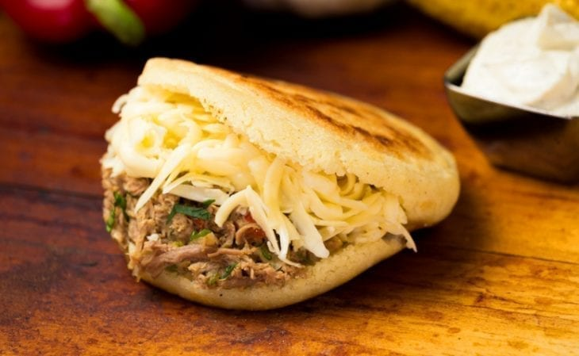

Receita de arepas venezuelanas
Ingredientes:
- 500 gramas de farinha de milho fina (fubá)
- 500 mililitros de água quente
- 1 colher de café de sal
- 1 colher de café de manteiga amolecida
- Queijo em fatias (opcional)
Como fazer as Arepas:
- Antes de começar preparando as arepas venezuelas, reúna os ingredientes necessários - as quantidades indicadas rendem 8 arepas.
- Coloque a farinha numa tigela, dissolva o sal na água e misture até obter uma massa homogênea.
- É importante obter uma massa de arepa compacta e lisa, pelo que terá de sovar bem com as mãos. Quando ficar como na fotografia, acrescente a manteiga e volte a sovar, para incorporar.
- Modele bolas de tamanho médio e deixe repousar por alguns minutos.
- Abra as bolinhas de massa até obter rodelas com cerca de um dedo de espessura. Cozinhe numa grelha em temperatura baixa, até que fiquem douradas de ambos os lados.
- Quando estiverem prontas, sugerimos que abra as arepas, recheie com queijo em fatias e leve ao forno a 180ºC por 10 minutos. Desta forma as arepas terminam de cozinhar no interior e o queijo fica derretido.
- Por fim pincele as arepas venezuelas com um pouco de manteiga e polvilhe uma pitada de sal. Desfrute ao café da manhã ou ao lanche, bom apetite!